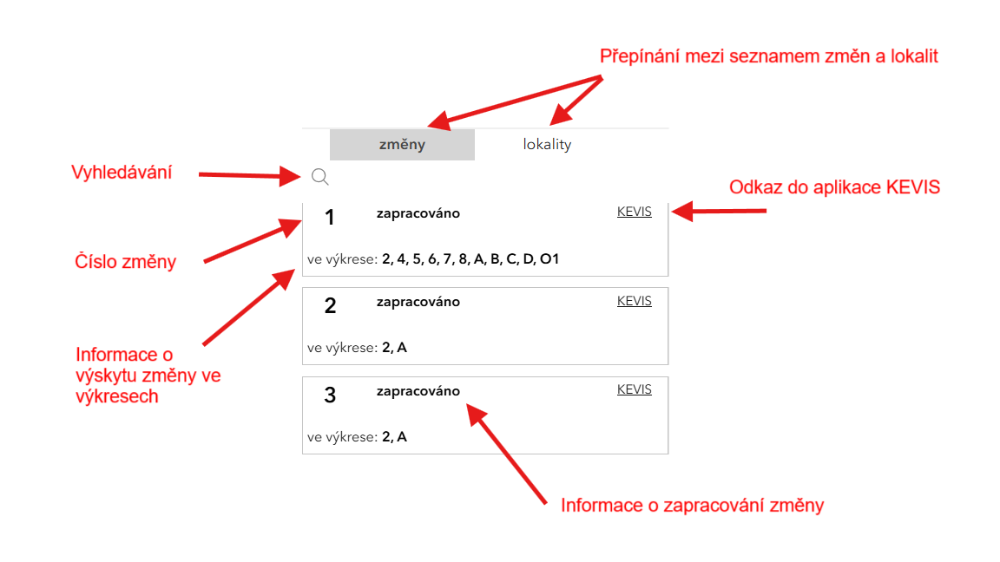

Hlavní menu v záhlaví aplikace slouží k přepínání mezi platným ÚP Plzeň a návrhem změny ÚP Plzeň č. 4.
V této mapě je dostupný platný Územní plán Plzeň. Město Plzeň má zpracovaný Územní plán Plzeň, který byl schválen usnesením č. 434 ze dne 8. září 2016.Tento územní plán byl aktualizován formou Změny č. 1 ÚP Plzeň (2021), Změny č. 2 ÚP Plzeň (2023) a Změny č. 3 ÚP Plzeň (2023).
V této mapě je dostupný návrh změny č. 4 ÚP Plzeň (v jednotném standardu územně plánovací dokumentace). O zahájení pořizování Změny č. 4 ÚPP rozhodlo Zastupitelstvo města Plzně usnesením č. 176 ze dne 15. 6. 2023. Seznam změn je dostupný v pravém postranním panelu a v mapě je možné oblasti dotčené změnou zobrazit zapnutím vrstvy "ÚPP změna č.4".
Návrh změny č. 4 ÚP Plzeň je v rozpracovatelnosti. Zveřejněný pro veřejnost bude při zahájení projednávání změny.
Zobrazuje současně dvě mapová okna a umožňuje vzájemné porovnání platného ÚP Plzeň a návrhu změny č. 4 ÚP Plzeň.
Ovládací panel v levé horní části obrazovky obsahuje několik užitečných nástrojů a funkcí, které vám umožní snadno pracovat s mapovými daty. V seznamu níže se seznámíte s jednotlivými částmi aplikace.
V panelu vrstvy se zobrazují výkresy ÚP Plzeň a podkladní vrstvy. Je zde možné také ovládat průhlednost jednotlivých výkresů.
V panelu legendy se zobrazují legendy k jednotlivým výkresům ÚP Plzeň.
V tomto panelu se zubrazuje textová část ÚP Plzeň (ve výstavbě)
V tomto panelu lze změnit podkladové mapy. Ve Výchozím nastavení je aktivní prázdná podkladová mapa. Mimo katastrální mapy je možné zobrazit letecké snímky a mapu majetkových poměrů.
Nástrojem sdílet lze vytvořit odkaz ke sdílení aktuálního rozsahu mapy a vrstev.
Nástroj Tisk umožňuje na základě zvolených parametrů vytisknout obsah mapového okna. Tisk generuje soubor, který je následně nabídnut ke stažení.
Nástroj vyhledávání umožňuje snadné vyhledávání dle údajů z RÚIAN (Registr územní identifikace, adres a nemovitostí). Tento nástroj je užitečný pro rychlé nalezení konkrétní adresy, parcely nebo jiných geografických entit registrovaných v RÚIAN.
Nástroj měření umožňuje měření délky a plochy.
Pravý postranní panel je aktivní v mapě zobrazující změnu č. 4 ÚP Plzeň. Zobrazuje seznam změn a lokalit. Při kliknutí na položku se provede přiblížení v mapě a označení vybraného prvku. Tento panel lze v případě potřeby skrýt.
